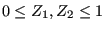

Next: Restrictor, Bend
Up: Fluid Section Types: Gases
Previous: Restrictor, Enlargement
Contents
Properties: adiabatic, not isentropic, directional, outlet based restrictor
Figure 98:
Geometry of a contraction
 |
The geometry of a contraction is shown in Figure 98.
It is described by the following constants (to be specified in that order on
the line beneath the *FLUID SECTION, TYPE=RESTRICTOR
CONTRACTION card):
- full cross section
 .
.
- reduced cross section .
- hydraulic diameter
 of the reduced cross section defined by
of the reduced cross section defined by  where
where  is the
perimeter of the cross section.
is the
perimeter of the cross section.
- chamfer length
 .
.
- chamfer angle
 (
( ).
).
- oil mass flow in the restrictor (only if the OIL parameter is used to define
the kind of oil in the *FLUID SECTION card)
- not used (internally: oil material number)
The loss coefficient for a contraction is taken from [33].
By specifying the parameter LIQUID on the *FLUID SECTION card the loss is
calculated for liquids. In the absence of this parameter, compressible losses
are calculated.
Example files: piperestrictor, restrictor, restrictor-oil.
Next: Restrictor, Bend
Up: Fluid Section Types: Gases
Previous: Restrictor, Enlargement
Contents
guido dhondt
2018-12-15